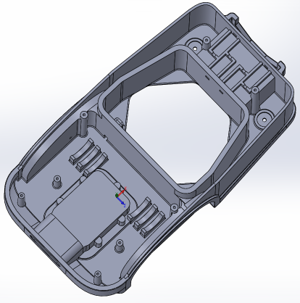
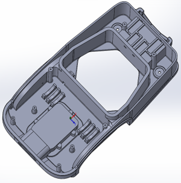
Electronics Engineer
Contact Me
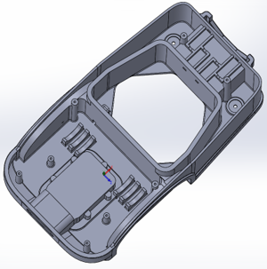
Injection-moulded structural casing designs for a robotic mower. Reinforcing ribs and draft angles are intergrated to improve strength and manufacturability, while a 10mm shell wall reduces material usage, shortens moulding cycle time, and lowers production costs.


To determine the overall size of a product or its components, the key mechanical elements can first be modelled to establish an initial size guide. Transparency tools are then used to visualise internal components while developing the external geometry, allowing space requirements to be assessed and refined efficiently.
 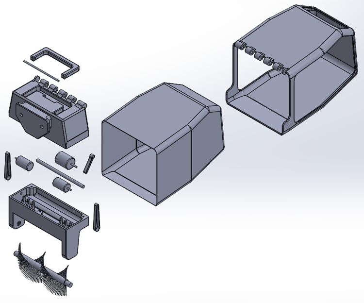
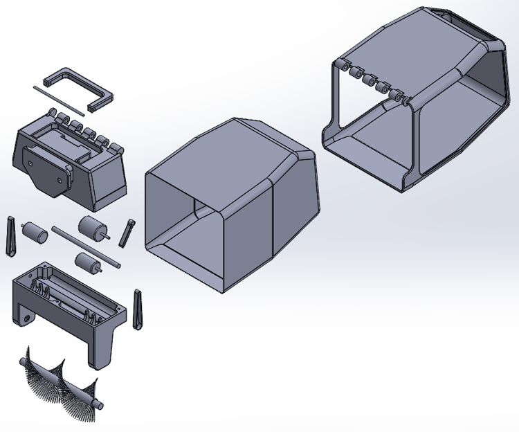

Exploded views of a modular robotic mower, clearly illustrating the overall layout of the product and its individual components, as well as the elements required for manufacture.

 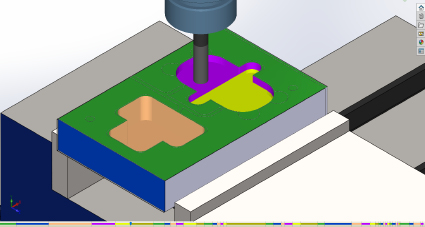
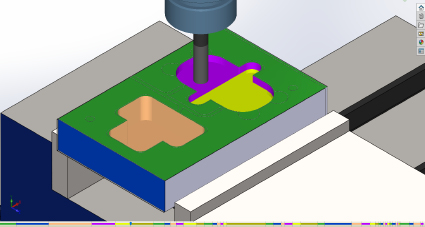


CNC milling simulations used to generate and verify G-code for an injection mould tool. The simulations confirm toolpath accuracy, material removal, and machine behaviour prior to manufacturing, reducing the likelihood of machining errors.
 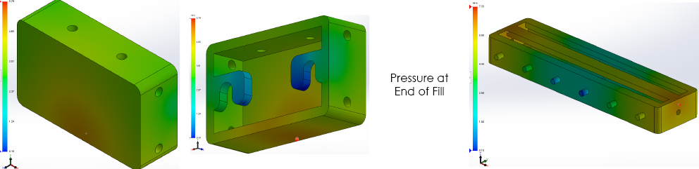
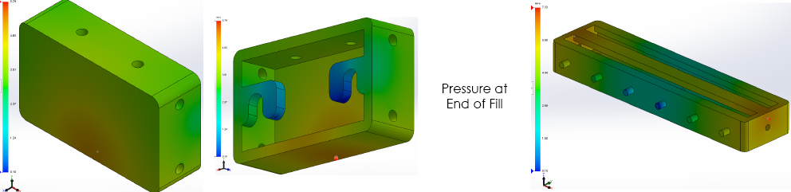
CAD software was used to optimize the design of the injection mould tool for the magnetic kitchen knife holder. Simulations determined the optimal placement of channels to ensure efficient and complete filling of the mould cavity, reducing potential defects and improving overall manufacturing quality.


Finite Element Analysis was used to evaluate how the magnetic kitchen knife holder would handle multiple knives. Weak points in the hooks were identified and redesigned for greater strength, ensuring the product's durability before manufacturing, further reducing the costs from wasted material.
CAD enables rapid prototyping and testing of mechanical systems without the need for physical builds. This process identifies the most effective latch design for securely connecting multiple modules to the main body of a modular robotic garden care device.
 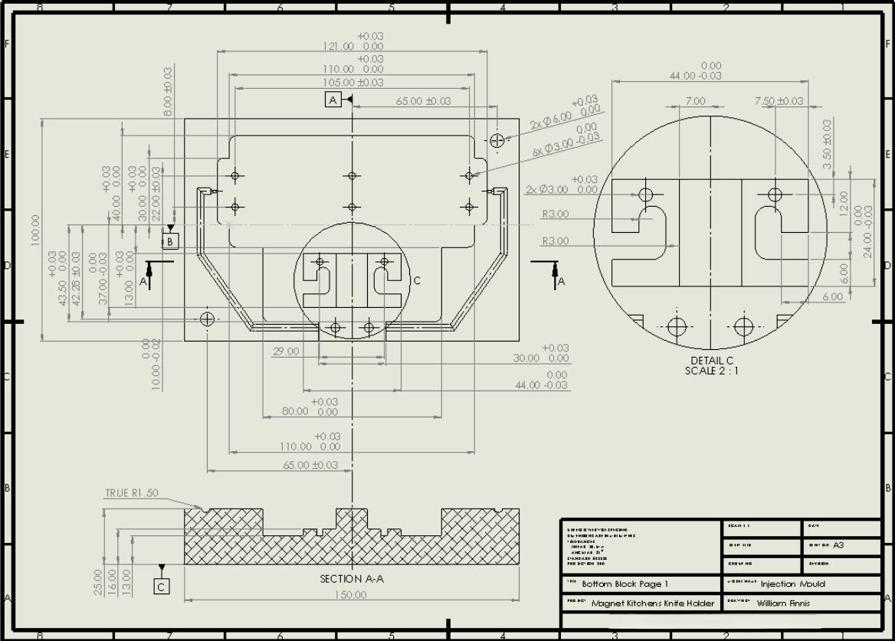
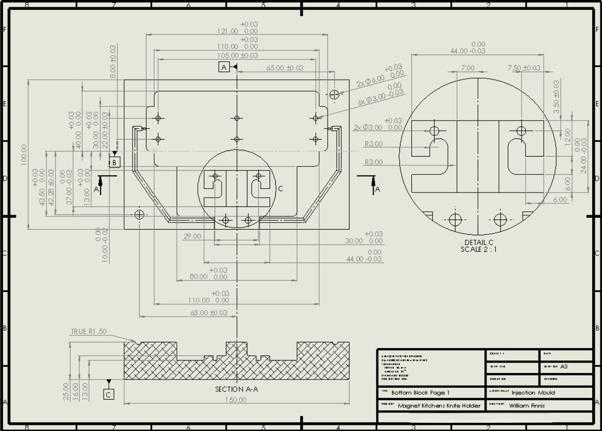

Engineering drawings transalte designs into clear, actionable instructions for manufacture. These drawings were used to produce an injection mould tool, employing CNC machines, milling machines, and metal lathes.

 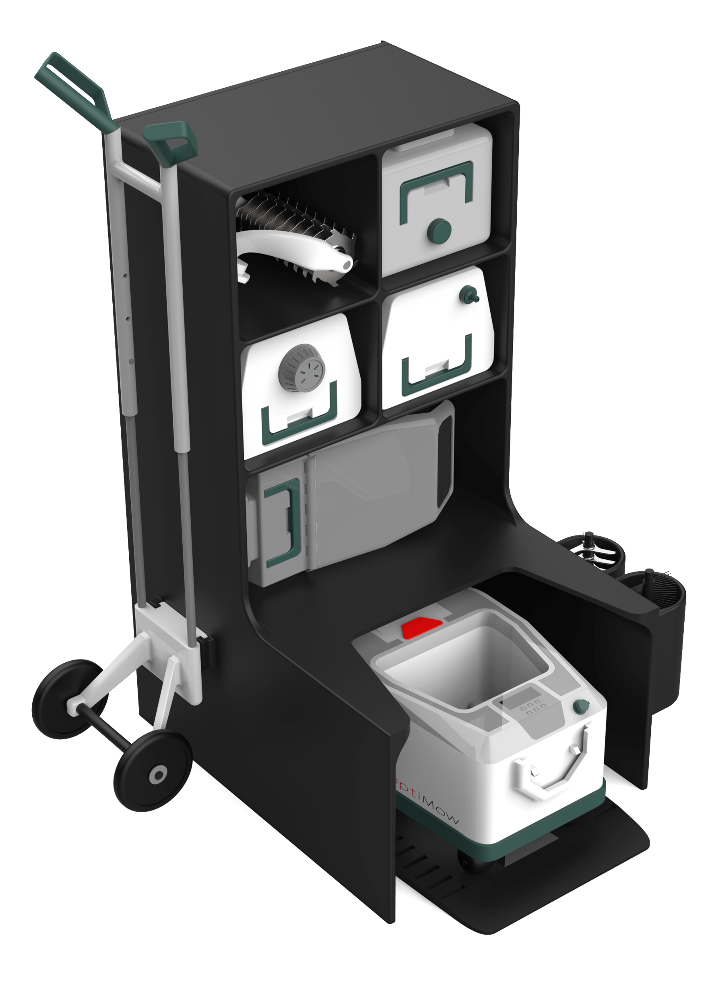
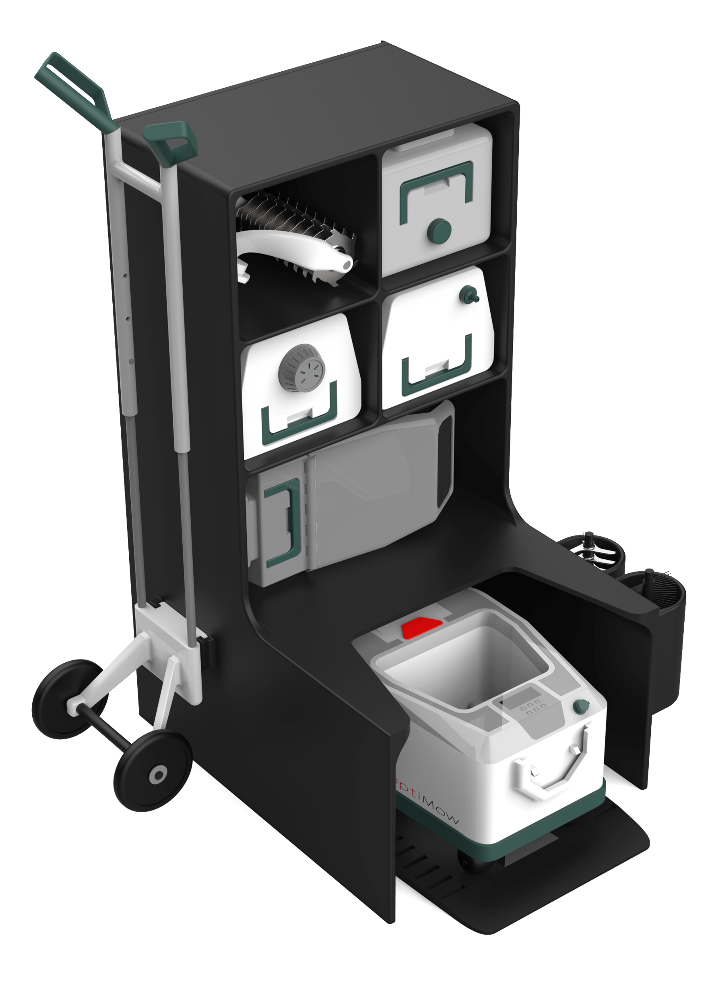


These renders showcase a modular garden care robot capable of performing a wide range of maintenance tasks, beyond just mowing the lawn. They provide a clear visulisation of the final product, enabling the designer to refine details and make adjustments before production, reducing the risk of costly revisions or delays later in the manufacturing process.
 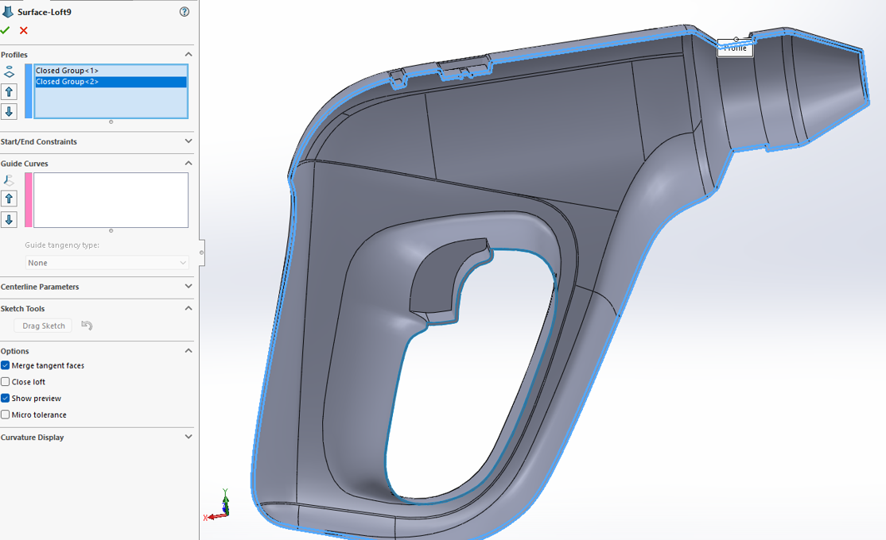
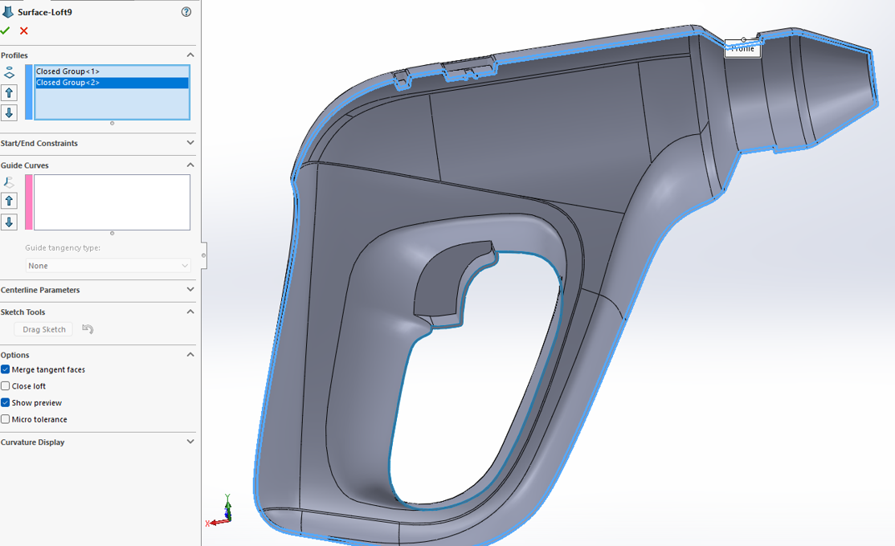

This surface modeling project highlights the creation of complex, fluid curves that are difficult to achieve with conventional CAD techniques. The process enables precise control of light interactions across surfaces, producting a highly refined and visually sophisticated final model.
A trebuchet designed to launch squash balls was modeled and animated in Blender to simulate the motion of each component. This analysis ensured the mechanism's functionality and highlighted any necessary adjustments prior to physical construction, optimising performance and reliability.